Orange Ringe: Länder mit Geschichten auf Deutsch
Dreh den Globus — wähle ein NewsToons-Land! 🌍
Alle Geschichten
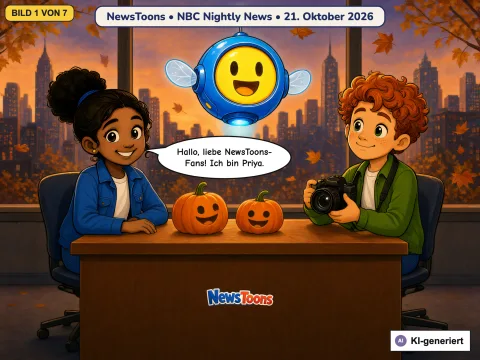
Toledos Nachbarn in Sicherheit und der Held im Schulbus
2026-10-21
🇺🇸 aus den USA · NBC Nightly News
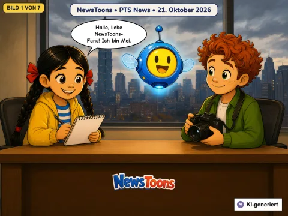
Ein Handy, das Gebärdensprache versteht, und rote Blätter, die etwas früher da sind
2026-10-21
🇹🇼 aus Taiwan · PTS News (公視新聞)
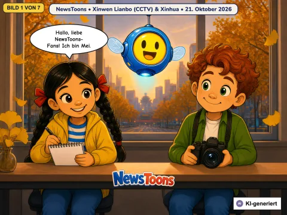
Wasserstoff auf der Straße, ein Platz bei Olympia und die erste Skipiste
2026-10-21
🇨🇳 aus China · Xinwen Lianbo (CCTV) and Xinhua
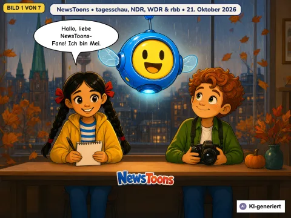
Ein Brief für einen sicheren Schulweg und große Vögel wieder zu Hause
2026-10-21
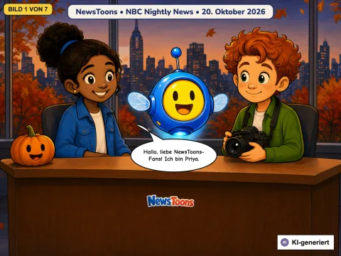
Ein großer Sturm auf dem Meer und ein Flugzeug, das sicher zum Stehen kommt
2026-10-20
🇺🇸 aus den USA · NBC Nightly News
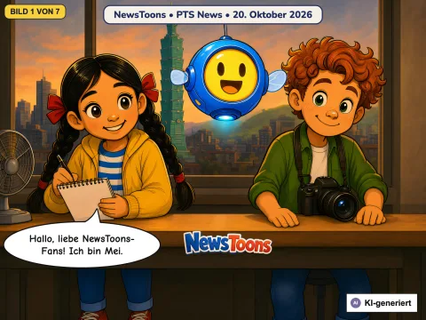
Ein Raumschiff für einen Marsmond, ein Roboter, der Keime wegputzt, und ein letztes Sportfest
2026-10-20
🇹🇼 aus Taiwan · PTS News (公視新聞網 PNN)
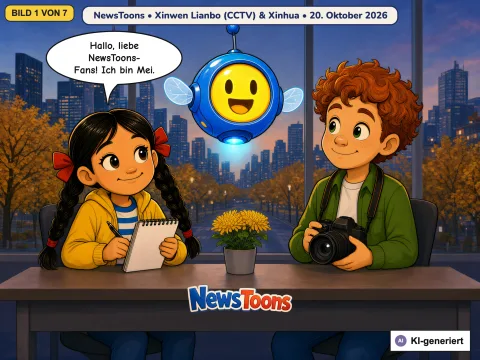
Flusswasser auf dem Weg nach Norden und ein Mikroskop, das eine Maus tragen kann
2026-10-20
🇨🇳 aus China · Xinwen Lianbo (CCTV) and Xinhua
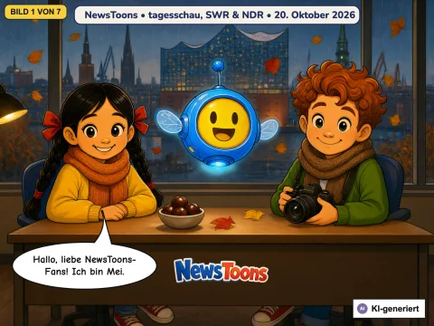
Ein Klavier im See und zwei Tischfußball-Meister
2026-10-20
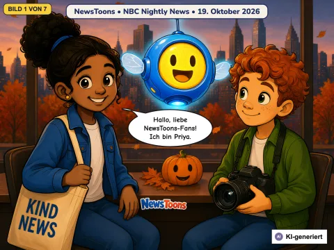
Feuerwehrleute am Flughafen, ein glänzendes Rätsel und eine geteilte Krone
2026-10-19
🇺🇸 aus den USA · NBC Nightly News
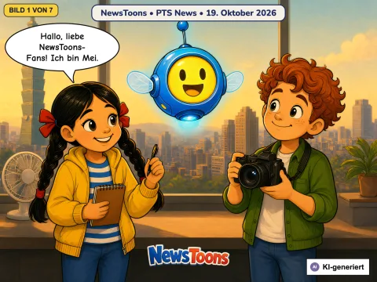
Taiwan bereitet sich auf einen großen Sturm vor und Helfer machen Platz für Taiwans Para-Badminton-Team
unconfirmed
🇹🇼 aus Taiwan · PTS News (公視新聞)
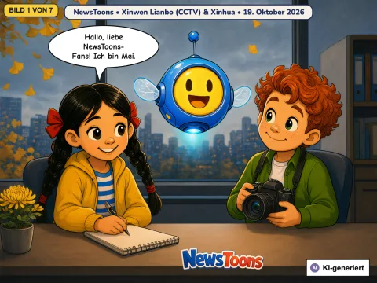
Das Lächeln einer Siegerin, Schwimmer, die zusammen trainieren, Schulfußball in Suzhou und Äpfel am Rand der Wüste
2026-10-19
🇨🇳 aus China · Xinwen Lianbo (CCTV) and Xinhua
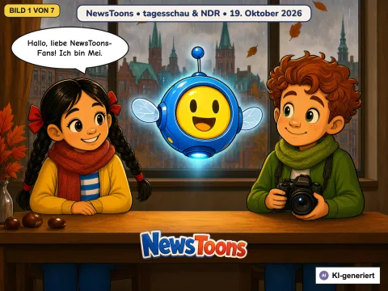
Idefix macht sich auf den Weg zu einem Marsmond und ein Busfahrer, der sich kümmert
2026-10-19
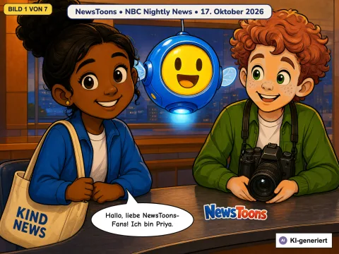
Feuerwehrleute helfen Familien nach Hause und der große Tag eines Superfans
2026-10-17
🇺🇸 aus den USA · NBC Nightly News
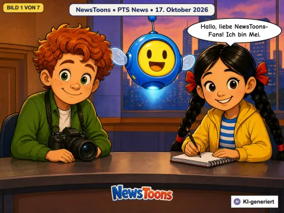
Tainans Züge fahren unter die Erde und zwei Brüder, zwei Teams
2026-10-17
🇹🇼 aus Taiwan · PTS News (公視新聞)
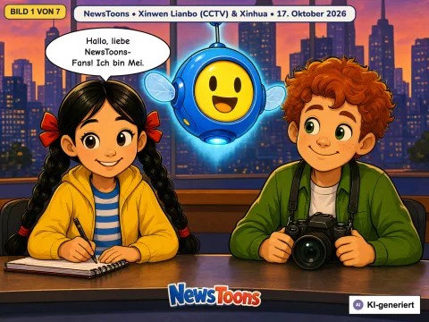
Die Heizung geht früher an und Kraniche machen sich bereit für den Flug nach Süden
2026-10-17
🇨🇳 aus China · Xinwen Lianbo (CCTV) and Xinhua
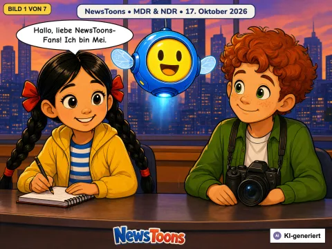
Ein Zukunftswald, ein sicheres Zuhause für Bären, eine lange Wanderung und Drachen am Meer
2026-10-17
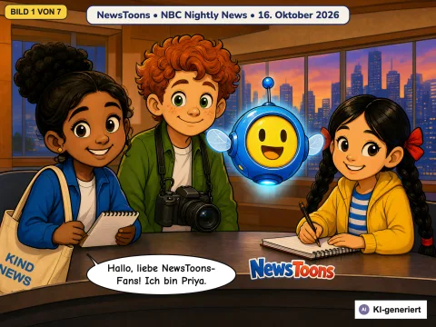
LouLou ist gefunden, ein Auto, das springt, und der Burger-Forscher
2026-10-16
🇺🇸 aus den USA · NBC Nightly News
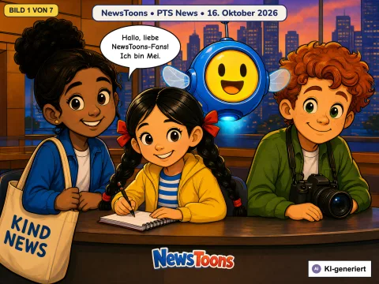
Das Horn des Walrufers und ein riesiges Baseballstadion mit Dach
2026-10-16
🇹🇼 aus Taiwan · PTS News (公視新聞)
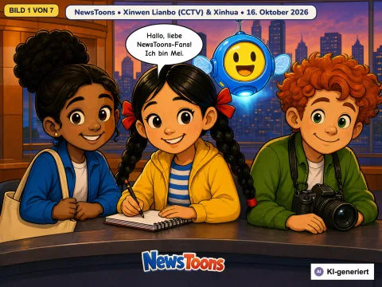
Tschüss, Schaltsekunde! Kluge Getreidelager und ein Wald aus dem Sand
2026-10-16
🇨🇳 aus China · Xinwen Lianbo (CCTV) and Xinhua
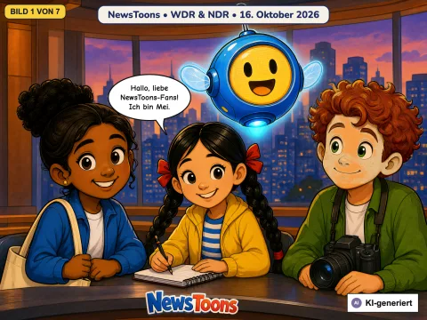
Gold im Tischtennis, ein Giraffenbaby, ein sauberer Uhu und nette Busfahrer
2026-10-16
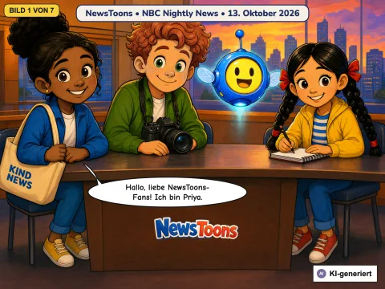
Die große Kürbis-Flucht & Ein mutiger großer Bruder
2026-10-13
🇺🇸 aus den USA · NBC Nightly News
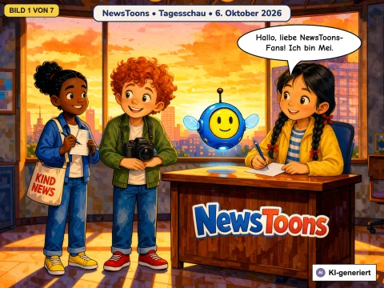
Zwei Nobelpreise, ein Stein aus dem All sucht einen Namen und die größte Buchmesse der Welt
2026-10-06
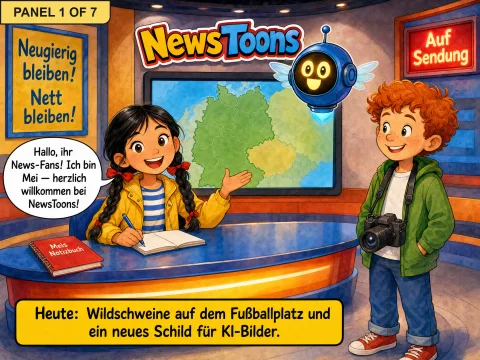
Wildschweine auf dem Platz und das KI-Schild
2026-08-04